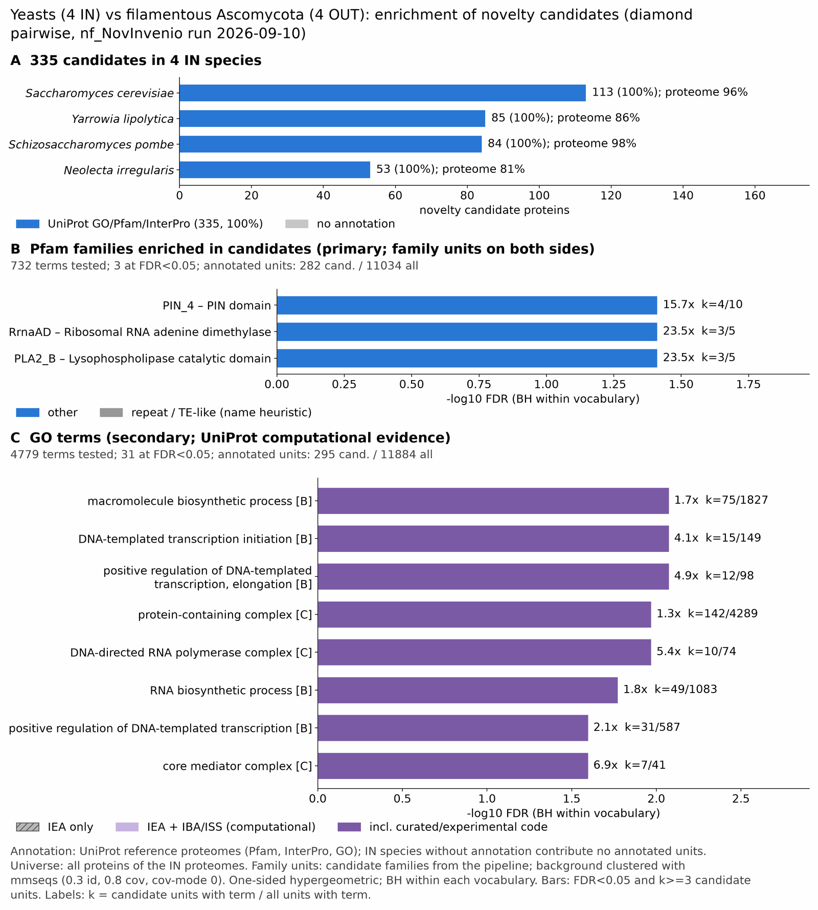

yeast filamentous: functional enrichment (novelty)
One-sided hypergeometric test per term; Benjamini-Hochberg FDR within each scope, level and vocabulary. Candidates are the novelty candidates: gene families present in the IN group and absent from the OUT group. Universe: proteome. Background clustered: True (22912 sequences in 14579 clusters, mmseqs easy-cluster --min-seq-id 0.3 -c 0.8). Family level: one unit per candidate family and per background cluster.
Sources: Pfam: 2026-01-27-Pfam38.2; InterPro entries: 110.0; GO: releases/2026-07-26; analysis generated 2026-10-13T22:08:20. Source tables: studies/fungi/yeast_filamentous/analysis/enrichment/outputs/proteome_clustered.
Full record: PROVENANCE. Run report: report.html.
- Annotation provenance is not fully recorded: PROVENANCE.yaml lists the per-species annotation files and their checksums, but not the UniProt release they come from.
- GO results are secondary. GO annotations include computational evidence (IEA, IBA); the GO evidence column shows if a term has non-IEA support.
- Candidate families (pipeline clustering of candidates) and background clusters (mmseqs clustering of the background proteome) are made by different runs, so family-level counts are not fully comparable.
Summary figure

Annotation coverage
Fraction of proteins with at least one term per vocabulary. Universe = all proteins of the species; candidates = the candidate set.
| Species | Set | Proteins | Pfam | Pfam clan | InterPro | GO | Any |
|---|---|---|---|---|---|---|---|
| Scer | universe | 6066 | 84.0% | 65.3% | 87.8% | 95.0% | 95.8% |
| Scer | candidates | 92 | 91.3% | 69.6% | 98.9% | 98.9% | 100.0% |
| Ylip | universe | 6449 | 80.5% | 64.5% | 85.2% | 78.7% | 85.8% |
| Ylip | candidates | 61 | 86.9% | 60.7% | 100.0% | 91.8% | 100.0% |
| Spom | universe | 5129 | 89.2% | 69.6% | 91.5% | 98.0% | 98.3% |
| Spom | candidates | 75 | 94.7% | 57.3% | 98.7% | 98.7% | 100.0% |
| Nirr | universe | 5530 | 75.4% | 60.6% | 80.5% | 73.5% | 81.0% |
| Nirr | candidates | 34 | 85.3% | 70.6% | 97.1% | 88.2% | 97.1% |
| ALL_IN | universe | 23174 | 82.2% | 64.9% | 86.2% | 86.0% | 90.0% |
| ALL_IN | candidates | 262 | 90.5% | 64.1% | 98.9% | 95.8% | 99.6% |
Tests summary
Per vocabulary: terms with FDR < 0.05 / terms tested. Protein level counts proteins; family level counts candidate families and background clusters.
| Scope | Level | Cand. units | Pfam sig / tested | Pfam clan sig / tested | InterPro sig / tested | GO sig / tested |
|---|---|---|---|---|---|---|
| whole_set | family | 223 | 6 / 724 | 0 / 304 | 7 / 1616 | 65 / 4767 |
| whole_set | protein | 262 | 16 / 1537 | 10 / 390 | 26 / 3548 | 92 / 5900 |
| Nirr | family | 34 | 0 / 166 | 0 / 179 | 0 / 501 | 0 / 2191 |
| Nirr | protein | 34 | 0 / 194 | 0 / 182 | 0 / 563 | 0 / 2246 |
| Scer | family | 91 | 0 / 161 | 0 / 174 | 0 / 481 | 0 / 3452 |
| Scer | protein | 92 | 0 / 263 | 0 / 199 | 0 / 708 | 7 / 3723 |
| Spom | family | 61 | 0 / 157 | 0 / 168 | 0 / 454 | 0 / 3051 |
| Spom | protein | 75 | 7 / 222 | 5 / 180 | 14 / 601 | 22 / 3187 |
| Ylip | family | 61 | 0 / 173 | 0 / 183 | 0 / 512 | 0 / 2498 |
| Ylip | protein | 61 | 0 / 252 | 0 / 199 | 0 / 689 | 0 / 2647 |
Top 25 Pfam terms (whole set, family level)
25 rows shown, ordered by FDR then p-value; 6 have FDR < 0.05 (bold).
| Term | Name | k / N cand. | n / M bg | Fold | FDR (BH) |
|---|---|---|---|---|---|
| PF00398 | RrnaAD: Ribosomal RNA adenine dimethylase | 4 / 201 | 5 / 10957 | 43.61 | 1.96e-04 |
| PF05172 | RRM_Nup35: Nup53/35/40-type RNA recognition motif | 4 / 201 | 5 / 10957 | 43.61 | 1.96e-04 |
| PF13638 | PIN_4: PIN domain | 4 / 201 | 10 / 10957 | 21.805 | 0.005 |
| PF00320 | GATA: GATA zinc finger | 5 / 201 | 26 / 10957 | 10.483 | 0.014 |
| PF05063 | MT-A70: MT-A70 | 3 / 201 | 6 / 10957 | 27.256 | 0.014 |
| PF13716 | CRAL_TRIO_2: Divergent CRAL/TRIO domain | 3 / 201 | 6 / 10957 | 27.256 | 0.014 |
| PF00642 | zf-CCCH: Zinc finger C-x8-C-x5-C-x3-H type (and similar) | 4 / 201 | 21 / 10957 | 10.383 | 0.053 |
| PF00022 | Actin: Actin | 3 / 201 | 13 / 10957 | 12.58 | 0.137 |
| PF00665 | rve: Integrase core domain | 2 / 201 | 6 / 10957 | 18.171 | 0.385 |
| PF02469 | Fasciclin: Fasciclin domain | 2 / 201 | 7 / 10957 | 15.575 | 0.479 |
| PF00078 | RVT_1: Reverse transcriptase (RNA-dependent DNA polymerase) | 2 / 201 | 8 / 10957 | 13.628 | 0.574 |
| PF03372 | Exo_endo_phos: Endonuclease/Exonuclease/phosphatase family | 2 / 201 | 10 / 10957 | 10.902 | 0.825 |
| PF00620 | RhoGAP: RhoGAP domain | 3 / 201 | 30 / 10957 | 5.451 | 0.955 |
| PF01535 | PPR: PPR repeat | 2 / 201 | 16 / 10957 | 6.814 | 1.000 |
| PF00098 | zf-CCHC: Zinc knuckle | 2 / 201 | 19 / 10957 | 5.738 | 1.000 |
| PF00505 | HMG_box: HMG (high mobility group) box | 2 / 201 | 22 / 10957 | 4.956 | 1.000 |
| PF00366 | Ribosomal_S17: Ribosomal protein S17 | 1 / 201 | 5 / 10957 | 10.902 | 1.000 |
| PF00428 | Ribosomal_60s: 60s Acidic ribosomal protein | 1 / 201 | 5 / 10957 | 10.902 | 1.000 |
| PF01284 | MARVEL: Membrane-associating domain | 1 / 201 | 5 / 10957 | 10.902 | 1.000 |
| PF02453 | Reticulon: Reticulon | 1 / 201 | 5 / 10957 | 10.902 | 1.000 |
| PF03547 | Mem_trans: Membrane transport protein | 1 / 201 | 5 / 10957 | 10.902 | 1.000 |
| PF03874 | RNA_pol_Rpb4: RNA polymerase Rpb4 | 1 / 201 | 5 / 10957 | 10.902 | 1.000 |
| PF04032 | Rpr2: RNAse P Rpr2/Rpp21/SNM1 subunit domain | 1 / 201 | 5 / 10957 | 10.902 | 1.000 |
| PF04683 | Rpn13_ADRM1_Pru: Proteasome complex subunit Rpn13, Pru domain | 1 / 201 | 5 / 10957 | 10.902 | 1.000 |
| PF10295 | DUF2406: Uncharacterised protein (DUF2406) | 1 / 201 | 5 / 10957 | 10.902 | 1.000 |
Top 25 InterPro terms (whole set, family level)
25 rows shown, ordered by FDR then p-value; 7 have FDR < 0.05 (bold).
| Term | Name | k / N cand. | n / M bg | Fold | FDR (BH) |
|---|---|---|---|---|---|
| IPR001737 | Family:Ribosomal RNA adenine methyltransferase KsgA/Erm | 4 / 220 | 5 / 11736 | 42.676 | 3.19e-04 |
| IPR007846 | Domain:RNA-recognition motif (RRM) Nup35-type domain | 4 / 220 | 5 / 11736 | 42.676 | 3.19e-04 |
| IPR045877 | Family:RNA-binding protein ZFP36-like | 4 / 220 | 5 / 11736 | 42.676 | 3.19e-04 |
| IPR002716 | Domain:PIN domain | 4 / 220 | 14 / 11736 | 15.242 | 0.040 |
| IPR007757 | Family:MT-A70-like | 3 / 220 | 6 / 11736 | 26.673 | 0.040 |
| IPR013088 | Homologous_superfamily:Zinc finger, NHR/GATA-type | 5 / 220 | 28 / 11736 | 9.526 | 0.041 |
| IPR000679 | Domain:Zinc finger, GATA-type | 5 / 220 | 29 / 11736 | 9.197 | 0.042 |
| IPR000571 | Domain:Zinc finger, CCCH-type | 5 / 220 | 37 / 11736 | 7.209 | 0.119 |
| IPR029060 | Homologous_superfamily:PIN-like domain superfamily | 4 / 220 | 24 / 11736 | 8.891 | 0.171 |
| IPR036855 | Homologous_superfamily:Zinc finger, CCCH-type superfamily | 4 / 220 | 26 / 11736 | 8.207 | 0.210 |
| IPR004000 | Family:Actin family | 3 / 220 | 13 / 11736 | 12.31 | 0.218 |
| IPR006553 | Repeat:Leucine-rich repeat, cysteine-containing subtype | 3 / 220 | 13 / 11736 | 12.31 | 0.218 |
| IPR043128 | Homologous_superfamily:Reverse transcriptase/Diguanylate cyclase domain | 3 / 220 | 14 / 11736 | 11.431 | 0.252 |
| IPR002885 | Repeat:Pentatricopeptide repeat | 4 / 220 | 32 / 11736 | 6.668 | 0.303 |
| IPR050600 | Family:SETD3/SETD6 methyltransferase | 3 / 220 | 16 / 11736 | 10.002 | 0.303 |
| IPR045260 | Family:Guanine nucleotide-exchange factor Sec12-like | 2 / 220 | 5 / 11736 | 21.338 | 0.303 |
| IPR050410 | Family:CCR4/nocturin mRNA turnover and transcription | 2 / 220 | 5 / 11736 | 21.338 | 0.303 |
| IPR050904 | 2 / 220 | 5 / 11736 | 21.338 | 0.303 | |
| IPR023244 | Family:Brefeldin A-sensitivity protein 4 | 2 / 220 | 6 / 11736 | 17.782 | 0.408 |
| IPR001251 | Domain:CRAL-TRIO lipid binding domain | 3 / 220 | 19 / 11736 | 8.423 | 0.408 |
| IPR036865 | Homologous_superfamily:CRAL-TRIO lipid binding domain superfamily | 3 / 220 | 21 / 11736 | 7.621 | 0.465 |
| IPR000782 | Domain:FAS1 domain | 2 / 220 | 7 / 11736 | 15.242 | 0.465 |
| IPR036378 | Homologous_superfamily:FAS1 domain superfamily | 2 / 220 | 7 / 11736 | 15.242 | 0.465 |
| IPR052430 | Family:Protein BRE4 | 2 / 220 | 7 / 11736 | 15.242 | 0.465 |
| IPR001584 | Domain:Integrase, catalytic core | 2 / 220 | 9 / 11736 | 11.855 | 0.736 |
Top 15 GO terms (whole set, family level) — secondary, computational evidence (IEA/IBA) included
15 rows shown, ordered by FDR then p-value; 15 have FDR < 0.05 (bold).
| Term | Name | k / N cand. | n / M bg | Fold | FDR (BH) | GO evidence | Families with non-IEA |
|---|---|---|---|---|---|---|---|
| GO:0017056 | molecular_function:structural constituent of nuclear pore | 13 / 213 | 72 / 11807 | 10.009 | 1.97e-06 | has_non_IEA | 10 |
| GO:0051028 | biological_process:mRNA transport | 17 / 213 | 188 / 11807 | 5.012 | 1.15e-04 | has_non_IEA | 11 |
| GO:0032774 | biological_process:RNA biosynthetic process | 44 / 213 | 1074 / 11807 | 2.271 | 2.54e-04 | has_non_IEA | 20 |
| GO:0050658 | biological_process:RNA transport | 17 / 213 | 214 / 11807 | 4.403 | 2.70e-04 | has_non_IEA | 11 |
| GO:0051236 | biological_process:establishment of RNA localization | 17 / 213 | 214 / 11807 | 4.403 | 2.70e-04 | has_non_IEA | 11 |
| GO:0050657 | biological_process:nucleic acid transport | 17 / 213 | 215 / 11807 | 4.383 | 2.70e-04 | has_non_IEA | 11 |
| GO:0140513 | cellular_component:nuclear protein-containing complex | 57 / 213 | 1649 / 11807 | 1.916 | 3.64e-04 | has_non_IEA | 47 |
| GO:0141187 | biological_process:nucleic acid biosynthetic process | 44 / 213 | 1144 / 11807 | 2.132 | 5.54e-04 | has_non_IEA | 20 |
| GO:0005198 | molecular_function:structural molecule activity | 26 / 213 | 506 / 11807 | 2.848 | 5.97e-04 | has_non_IEA | 23 |
| GO:0006391 | biological_process:transcription initiation at mitochondrial promoter | 4 / 213 | 6 / 11807 | 36.955 | 5.97e-04 | has_non_IEA | 3 |
| GO:0034245 | cellular_component:mitochondrial DNA-directed RNA polymerase complex | 4 / 213 | 6 / 11807 | 36.955 | 5.97e-04 | has_non_IEA | 3 |
| GO:0034246 | molecular_function:mitochondrial transcription factor activity | 4 / 213 | 6 / 11807 | 36.955 | 5.97e-04 | has_non_IEA | 3 |
| GO:0006352 | biological_process:DNA-templated transcription initiation | 13 / 213 | 143 / 11807 | 5.039 | 6.41e-04 | has_non_IEA | 10 |
| GO:0044613 | cellular_component:nuclear pore central transport channel | 6 / 213 | 22 / 11807 | 15.118 | 6.41e-04 | has_non_IEA | 5 |
| GO:0006997 | biological_process:nucleus organization | 10 / 213 | 83 / 11807 | 6.679 | 7.25e-04 | has_non_IEA | 9 |
Actin cytoskeleton controls
Known actin-related families and how many of their proteins pass each filter. Protein ID columns are left out.
| control | pfam_ids | desc_regex | IN_universe | IN_in_matrix | IN_pass_ingroup_rule | candidates | near_miss_out1 | near_miss_out2 | n_Scer | n_Ylip | n_Spom | n_Nirr | n_Ncra | n_Afum | n_Ztri | n_Cimm |
|---|---|---|---|---|---|---|---|---|---|---|---|---|---|---|---|---|
| Arp2/3 ARPC2 (P34-Arc) | PF04045 | 4 | 4 | 4 | 0 | 0 | 0 | 1 | 1 | 1 | 1 | 1 | 1 | 1 | 1 | |
| Arp2/3 ARPC3 (P21-Arc) | PF04062 | 3 | 3 | 3 | 0 | 0 | 0 | 1 | 1 | 1 | 0 | 1 | 1 | 1 | 1 | |
| Arp2/3 ARPC4 | PF05856 | 4 | 4 | 4 | 0 | 0 | 0 | 1 | 1 | 1 | 1 | 1 | 1 | 1 | 1 | |
| Arp2/3 ARPC5 (P16-Arc) | PF04699 | 4 | 4 | 4 | 0 | 0 | 0 | 1 | 1 | 1 | 1 | 1 | 1 | 1 | 1 | |
| Arp2/3 ARPC1 (description only) | arp2/3 complex.*(41|p41|subunit 1)|ARPC1 | 1 | 1 | 1 | 0 | 0 | 0 | 0 | 0 | 0 | 1 | 0 | 0 | 0 | 0 | |
| Arp2 / Arp3 (description only) | actin-related protein (2|3)\b|\bARP[23]\b | 26 | 26 | 26 | 0 | 0 | 0 | 7 | 6 | 7 | 6 | 6 | 8 | 7 | 7 | |
| WAVE complex NCKAP1 | PF09735 | 0 | 0 | 0 | 0 | 0 | 0 | 0 | 0 | 0 | 0 | 0 | 0 | 0 | 0 | |
| WAVE complex CYFIP (FragX_IP) | PF05994 | 0 | 0 | 0 | 0 | 0 | 0 | 0 | 0 | 0 | 0 | 0 | 0 | 0 | 0 | |
| WAVE complex ABI | PF07815|PF27594 | 0 | 0 | 0 | 0 | 0 | 0 | 0 | 0 | 0 | 0 | 0 | 0 | 0 | 0 | |
| SCAR/WAVE (SCAR_helical) | PF27569 | 0 | 0 | 0 | 0 | 0 | 0 | 0 | 0 | 0 | 0 | 0 | 0 | 0 | 0 | |
| WASP family (WH1) | PF00568 | 4 | 4 | 4 | 0 | 0 | 0 | 1 | 1 | 1 | 1 | 1 | 1 | 1 | 1 | |
| WH2 motif (WASP, WAVE, others) | PF02205 | 8 | 8 | 7 | 0 | 0 | 0 | 2 | 2 | 2 | 2 | 1 | 3 | 3 | 2 | |
| Formin FH2 | PF02181 | 7 | 7 | 7 | 0 | 0 | 1 | 2 | 1 | 3 | 1 | 1 | 1 | 1 | 1 | |
| Formin Drf_GBD / Drf_FH3 / Drf_DAD | PF06371|PF06367|PF06345 | 8 | 8 | 6 | 0 | 0 | 1 | 1 | 1 | 4 | 2 | 2 | 2 | 2 | 2 | |
| Ena/VASP (VASP_tetra) | PF08776 | 0 | 0 | 0 | 0 | 0 | 0 | 0 | 0 | 0 | 0 | 0 | 0 | 0 | 0 | |
| Coronin (description only) | coronin | 4 | 4 | 4 | 0 | 0 | 0 | 1 | 1 | 1 | 1 | 1 | 1 | 1 | 1 | |
| Cortactin (HS1_rep) | PF02218 | 0 | 0 | 0 | 0 | 0 | 0 | 0 | 0 | 0 | 0 | 0 | 0 | 0 | 0 | |
| Myosin 2 tail (Myosin_tail_1) | PF01576 | 0 | 0 | 0 | 0 | 0 | 0 | 0 | 0 | 0 | 0 | 0 | 1 | 0 | 0 | |
| Myosin head (all myosins) | PF00063 | 19 | 19 | 19 | 0 | 0 | 0 | 5 | 4 | 5 | 5 | 4 | 4 | 5 | 4 |
Page written by bin/generate_enrichment_page.py.